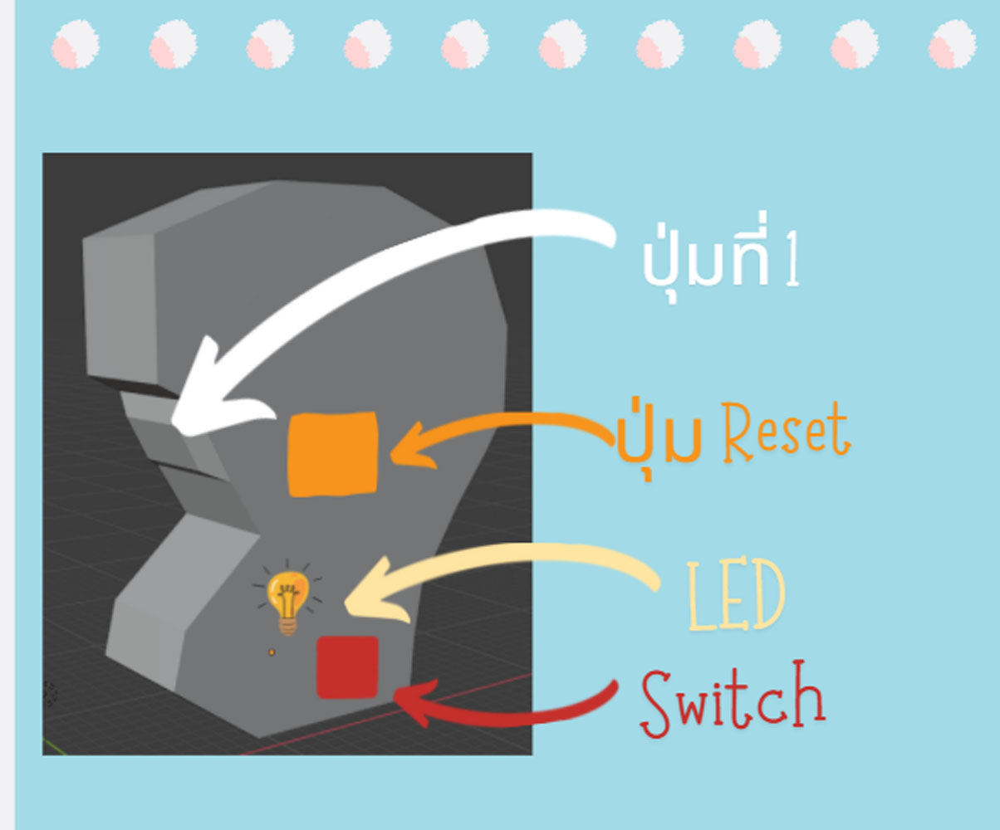
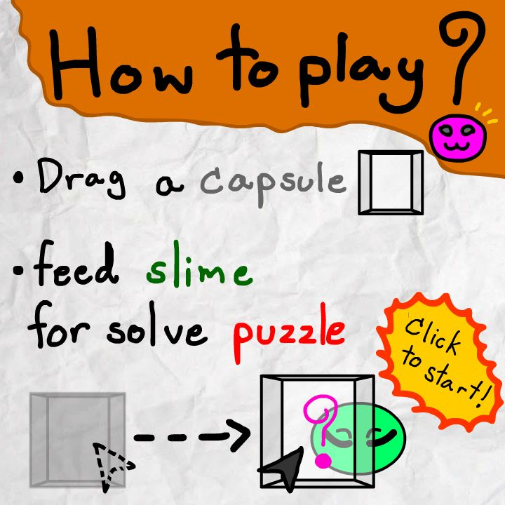
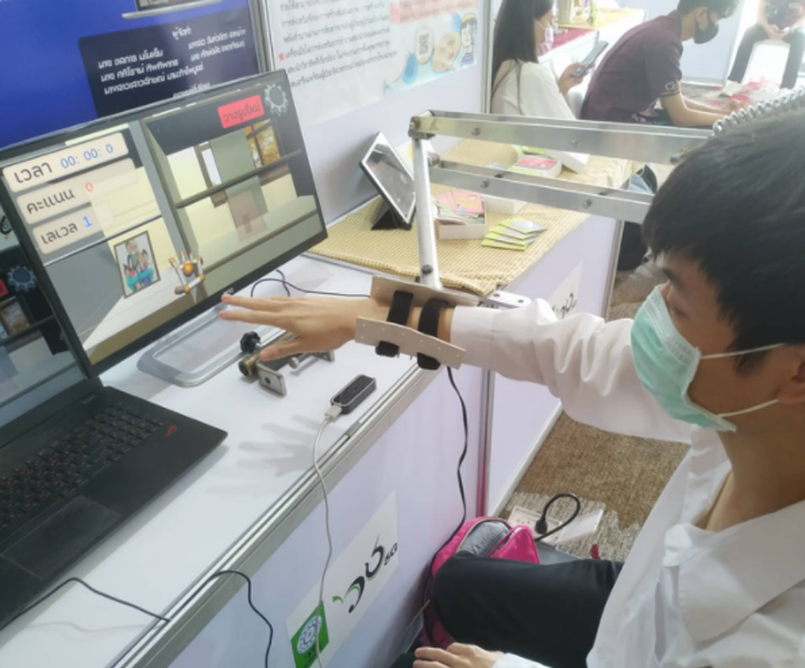

My Project
Back To My Portfolio
Hand Drive

จอยเกมประดิษฐ์จาก Arduino เพื่อใช้สำหรับเล่นเกมจาก Unity ผ่านการรับส่งสัญญาณ Bluetooth
Graph Beater
เกม 3D คณิตศาสตร์เรื่องระบบสมการเชิงเส้นและกราฟ ผู้เล่นจะได้รับบทเป็นนักบินอวกาศที่ต้องทำภารกิจต่างๆบนยานอวกาศลึกลับ โครงงานนี้ได้ผ่านเข้าถึงรอบรองชนะเลิศในโครงการ NSC 2021
Feed The Slime Puzzle Game

เกม 2D Puzzle ผู้เล่นจะต้องลากวัตถุต่างๆไปให้ Slime เปลี่ยนรูปร่างเพื่อไขปริศนา
Physiotherapy Aided Equipment By Arm Weight Compensation

เกม 3D จากความร่วมมือระหว่างหมาวิทยาลัยธรรมศาสตร์และมหาวิทยาลัยเทคโนโลยีพระจอมเกล้าธนบุรีสำหรับการผู้ที่ต้องการทำกายภาพบำบัดมือที่ไม่มีแรงมากพอที่จะยกแขนได้ด้วยตัวเอง ผู้เล่นจะต้องหยิบสิ่งของต่างๆ เช่น กรอบรูป ลูกบอล ไปวางไว้ยังจุดที่กำหนด